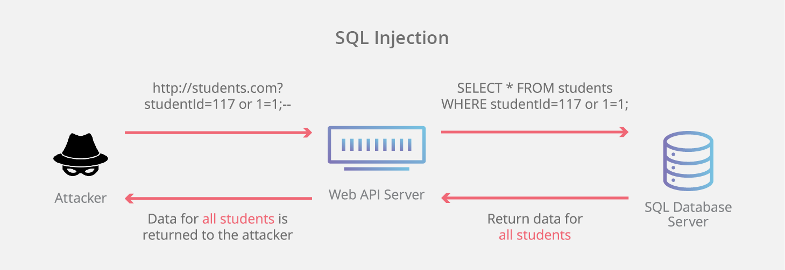

Capture The Flag (CTF)
The lab was designed to simulate a realistic penetration testing environment through Capture The Flag (CTF) challenges. These challenges encompassed various aspects of cybersecurity, including network reconnaissance, vulnerability assessment, exploitation, and web security. I was tasked with identifying vulnerabilities within a controlled network environment, exploiting these vulnerabilities to gain access, and retrieving sensitive data, all while utilizing standard tools and techniques shared in cybersecurity.

HIWA
NEWTWORK penetration
In this project, I will be examining an insecurely designed web application in this lab, and our tasks include finding the weaknesses and taking advantage of them. I will aim to complete 11 challenges in this lab, which will prompt us to investigate, identify, and exploit the vulnerabilities accordingly. There are three sections to the difficulties. The first only requires us to examine the webpage and search for potential security holes. In the following phase, I attempt to exploit those vulnerabilities by active assault, and in the last phase, I was expected to use advanced exploit techniques. Also, this lab is focused on simulating an attack on a web application.
metasploit
Network penetration tool
I worked on the Metasploit tool on a Kali Linux system to perform penetration testing on a vulnerable Metasploitable host. I verified connectivity between the attacker and victim and scanned for open ports using Nmap. I exploited vulnerable services such as rlogin, ingreslock, distccd, IRC daemon, VSFtpd, Samba, HTTP (PHP), and Postgres. For each service, I used specific Metasploit exploits, set the target host, and executed the exploits to gain root access and view root files.
Password Cracking
Network penetration tool
I focused on understanding and breaking password files in a Linux system. I looked at the /etc/passwd and /etc/shadow files to learn how user passwords are kept safe. Later, I used dictionary attacks on password files with various word lists to break passwords. This included using a small dictionary, an extensive dictionary with popular passwords, and premade digests for quicker results. Additionally, I compared the time taken by various hash functions (MD5, SHA1, SHA512) to know their effectiveness. Ultimately, I tested the vulnerability of our password files by making and breaking them.
SQL-injection Attack
Network penetration tool

Understanding and practicing password-cracking techniques. First, I examined how Linux systems store user passwords in the /etc/passwd and /etc/shadow files, noting the use of shadow passwords for security. I then performed dictionary attacks on password files using scripts to crack passwords hashed with SHA1, MD5, and SHA512. I compared the efficiency of these hash functions and explored the benefits of using salt values. Finally, I experimented with creating and cracking our password files to understand the practical implications of password security.